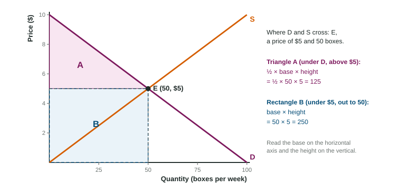

At a farmers market, a box of strawberries sells for $5. At that price, the number of boxes shoppers want to buy is exactly the number farmers brought. Put the shoppers' curve and the farmers' curve on one graph and that price is where they cross. Much of this course comes down to two graph skills: finding where two curves cross, and measuring the shapes, mostly triangles and rectangles, that form around that point.
Where two curves cross
A downward-sloping curve and an upward-sloping curve on the same graph cross at one point, the intersection. That point lies on both curves at once, so it gives the one price and quantity both curves agree on. To read it, draw a dashed line from the crossing point across to the price axis and another down to the quantity axis, and label the values (P1 and Q1, or the numbers themselves). On a market graph, the crossing point is the market's balance point, which Unit 2 studies in detail.

From a table, the crossing point is the row where both columns give the same quantity. If buyers want 50 bags at $4 and sellers offer 50 bags at $4, the curves cross at (50, $4). In the rows above and below, the two quantities differ.
When one curve shifts
When one curve shifts, the crossing point moves, and it moves along the curve that stayed put. The new point has to sit on the new curve and on the old, unmoved one. So:
- If the downward curve D shifts right, the crossing slides up along S: a higher price and a larger quantity.
- If the upward curve S shifts left, the crossing slides up along D: a higher price and a smaller quantity.
Worked example: before and after. More shoppers start coming to the market, so at every price buyers want more boxes.
- Which curve? Shoppers are buyers, so D shifts right, from D1 to D2. S stays where it is.
- New crossing. D2 meets S higher up and farther right. Label the old point E1 and the new one E2.
- Read both points with dashed lines to each axis: P1 and Q1 for E1, P2 and Q2 for E2.
- State the change: the price rises from P1 to P2 and the quantity rises from Q1 to Q2.
Always say what happened to both the price and the quantity. A reader looks for each one.
Areas: rectangles and triangles
Later units ask you to shade an area on a graph and work out its size in dollars. The shapes are almost always rectangles and triangles, and two formulas cover them:
| Shape | Area | On the figure |
|---|---|---|
| Rectangle | base × height | B: |
| Triangle | ½ × base × height | A: |
The base is a distance along the horizontal axis (a number of units) and the height is a distance along the vertical axis (a number of dollars). Because the height is in dollars and the base in units, the area comes out in dollars.
Worked example: the area of triangle A. D runs from $10 on the price axis down to 100 boxes; it crosses S at $5 and 50 boxes.
- Find the corners. Triangle A has corners at (0, $10), (0, $5) and the crossing point (50, $5).
- Base: along the $5 line, from 0 to 50 boxes, so 50.
- Height: up the price axis from $5 to $10, so 5. Measure from the triangle's own bottom edge, not from zero.
- Area: .
The two common slips are dropping the ½ (which gives the rectangle, 250) and measuring the height from the axis (which gives 10 instead of 5).
When you shade an area, shade all of it, right up to every edge, and stop at the right quantity. A shape shaded only partway, or past the quantity where it ends, does not earn the point. Later units name each of these shapes; the geometry stays the same.